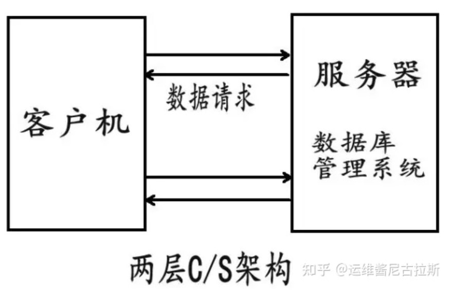
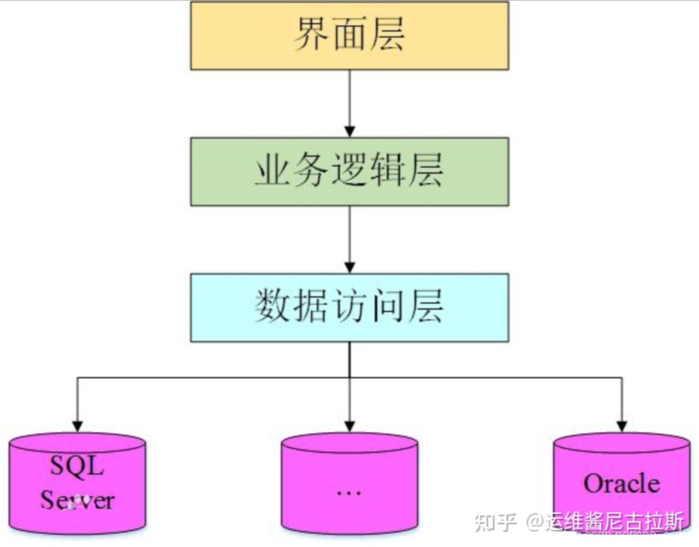

C/S 架構
Client / Server
- 使用前通常需要安裝專屬客戶端。
- 客戶端可能承擔部分運算與業務邏輯。
- 升級時常需要更新每一個客戶端。
- 適合需要本機能力或受控安裝環境的場景。

架構比較
選擇比較項目，觀察需要安裝的客戶端程式與只需瀏覽器的 Web 應用，在使用與維護上有什麼不同。
Client / Server

Browser / Server

C/S 通常先下載安裝專屬客戶端；B/S 則只要打開瀏覽器輸入網址即可。